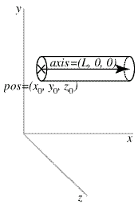

| Visual Reference |
 Here is an example of how to make a cylinder, naming it "rod" for future reference:
The center of one end of this cylinder is at x=0, y=2, and z=1. Its axis lies along the x axis, with length 5, so that the other end of the cylinder is at (5,2,1), as shown in the accompanying diagram.
You can modify the position of the cylinder after it has been created, which has the effect of moving it immediately to the new position:
rod.pos = (15,11,9) # change position (x,y,z)
rod.x = 15 # only change pos.x
If you create an object such as a cylinder but without giving it a name such as rod, you can't refer to it later. This doesn't matter if you never intend to modify the object.
Since we didn't specify a color, the cylinder will be the current "foreground" color (see Controlling One or More Visual Display Windows). The default foreground color is white. After creating the cylinder, you can change its color:
rod.color = (0,0,1) # make rod be blue
This will make the cylinder suddenly turn blue, using the so-called RGB system for specifying colors in terms of fractions of red, green, and blue. (For details on choosing colors, see Specifying Colors.) You can set individual amounts of red, green, and blue like this:
rod.red = 0.4
rod.green = 0.7
rod.blue = 0.8
The cylinder object can be created with other, optional attributes, which can be listed in any order. Here is a full list of attributes, most of which also apply to other objects:
pos
Position: the center of one end of the cylinder; default = (0,0,0)
A triple, in parentheses, such as (3,2,5)
axis The axis points from pos to the other end of the cylinder, default = (1,0,0)
x, y, z Essentially the same as pos.x, pos.y, pos.z, defaults are all 0
radius The radius of the cylinder, default = 1
length Length of axis;
if not specified, axis determines the length, default = 1
If length is specified, it overrides the length given by axis
color Color of object, as a red-green-blue (RGB) triple: (1,0,0) is pure red, default = (1,1,1), which is color.white
red, green, blue (can set these color attributes individually), defaults are all 1
up Which side of the cylinder is "up"; this has only a subtle effect on the 3D appearance of the cylinder, default (0,1,0)
Note that the pos attribute for cylinder, arrow, cone, and pyramid corresponds to one end of the object, whereas for a box, sphere, or ring it corresponds to the center of the object.
When you start a VPython program, for convenience Visual creates a display window and names it scene. By default, objects that you create go into that display window. See Controlling One or More Visual Display Windows later in this reference for how you can create additional display windows and place objects in them.